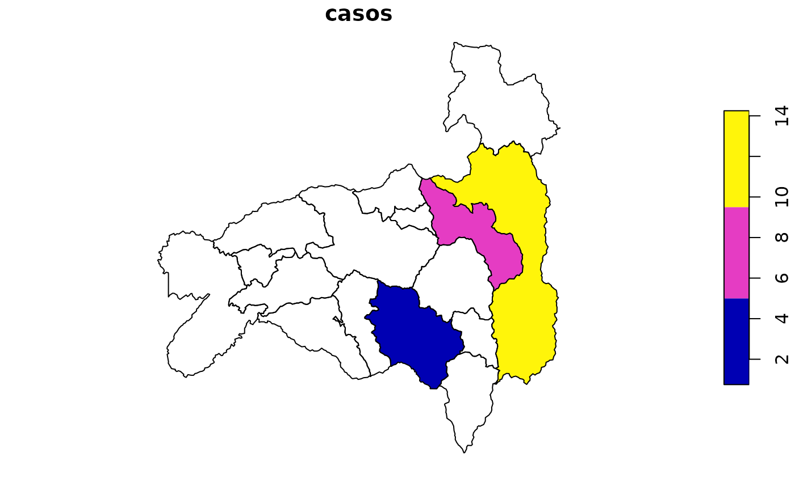

Une una tabla (casos, tasas, coberturas, etc.) con la capa del nivel
indicado usando el código DPA. Los códigos se formatean automáticamente,
así que funciona aunque vengan como número desde Excel. Se conservan todos
los polígonos de la capa: los territorios sin datos quedan con NA, lo
que permite mapearlos.
Usage
geoecu_unir(datos, codigo, nivel = c("canton", "provincia", "parroquia"), ...)Value
Un objeto sf con las columnas de la capa más las de datos.
Si hay códigos en datos que no existen en la capa, se avisa con una
advertencia.
Examples
casos <- data.frame(cod = c(1101, 1102, 1103), casos = c(12, 3, 7))
mapa <- geoecu_unir(casos, codigo = "cod", nivel = "canton",
provincia = "Loja")
plot(mapa["casos"])
